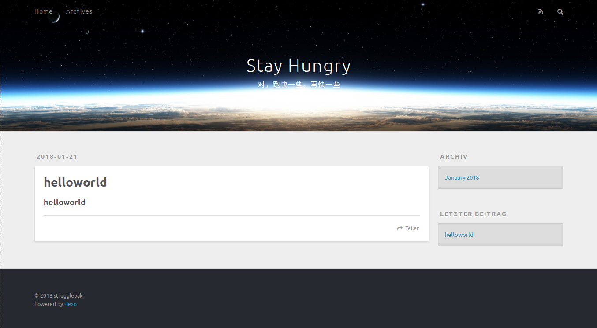
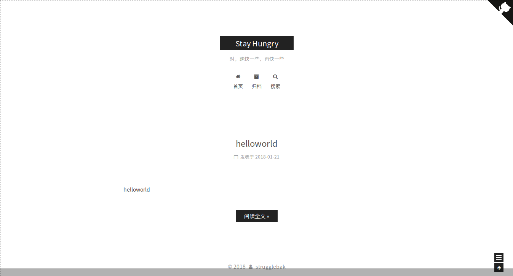

环境介绍
4.13.0-30-generic #33~16.04.1-Ubuntu SMP Mon Jan 15 21:31:06 UTC 2018 x86_64 x86_64 x86_64 GNU/Linux |
安装 Node.js
首先需要到 Node.js 官网上下载 node.js 的二进制包,目前我下载的版本是 8.9.4 LTS稳定版,然后解压到任意目录，目前我是解压到 /usr/local/ 这个目录下
xz -d node-v8.9.4-linux-x64.tar.xz |
然后配置环境变量，将以下加入 ~/.bashrc 中
# 在底部添加 PATH 变量 |
保存退出并使 .bashrc 生效
source ~/.bashrc |
安装 Hexo
首先在 HOME 目录创建博客所在目录
cd ~ |
然后是安装 Hexo
cd myBlog |
这个时候可以启动 hexo 来测试一下 hexo 是否安装成功
hexo s |
会出现
INFO Start processing |
字样，这个时候点击链接 http://localhost:4000/ 会出现类似下图页面

(主要是其中我修改了 _config.yml 配置文件的关系，所以标题什么的可能显得不一样，不过能出现类似的页面说明 hexo 已经配置成功)
安装 hexo 程序拓展插件
sudo npm install hexo-generator-index hexo-generator-archive hexo-generator-category hexo-generator-tag hexo-server hexo-deployer-git hexo-deployer-heroku hexo-deployer-rsync hexo-deployer-openshift hexo-renderer-marked hexo-renderer-stylus hexo-generator-feed hexo-generator-sitemap --save |
这些最好还是全部装上吧
配置 Hexo 相关主题
有关主题的配置文件有两个,一个是博客根目录下的 _config.yml 即 myBlog/_config.yml;还有一个是主题目录下的 _config.yml 即 myBlog/your_theme_dirname/_config.yml，这里我选择的是 nexT 这个主题，并且我命名的目录名为 next，所以我的主题配置文件路径为 myBlog/next/_config.yml
以下是我的博客根目录 _config.yml 的配置
# Hexo Configuration |
Hexo 相关主题的美化
首先就是主题的安装，就是 git clone 到 theme 目录
cd ~/myBlog |
然后就是修改 theme/next 下的配置文件来美化自己的主题了，我主要做了如下几步
显示 RSS
记住要安装 Hexo 插件,如果上面我说的安装插件没有做的话，就执行下面
npm install --save hexo-generator-feed |
然后在博客根目录下的 _config.yml 中添加
# Extensions |
然后在 next 主题目录下的 _config.yml 中配置 rss
# Set rss to false to disable feed link. |
设置侧边栏社交图标
依然在 theme/next/_config.yml 中配置
# --------------------------------------------------------------- |
有关图标可以到这个网站找 Font Awesome
配置评论系统
目前使用的是 来比力，这个可能需要科学上网，不能科学上网的同学请自己搭个梯子吧。然后登录注册，在代码管理的页面中获取 LiveRe UID,然后将这个 UID 粘贴到你的 theme/next/_config.yml 中的
livere_uid: #your livere_uid |
配置搜索服务
在 myBlog 目录下执行
npm install hexo-generator-searchdb --save |
编辑 myBlog/_config.yml，添加
search: |
编辑 myBlog/theme/next/_config.yml，启动本地搜索
local_search: |
设置阅读全文
编辑 myBlog/theme/next/_config.yml
auto_excerpt: |
修改文章内链接样式
将链接文本设置为蓝色，鼠标划过时文字颜色加深，并显示下划线
编辑 /themes/next/source/css/_custom/custom.styl，添加
.post-body p a { |
隐藏网页底部 powered By Hexo / 强力驱动 字样
很简单，编辑 themes/next/layout/_partials/footer.swig，然后就去掉 power-by 以及 theme-info 相关的标签
{% if theme.footer.powered %} |
右上角实现 fork me on github
我的选择是 这个黑色的 github 猫，然后编辑 themes/next/layout/_layout.swig，将代码复制到
<div class="headband"></div> |
这个下面
<a href="https://github.com/strugglebak" class="github-corner" aria-label="View source on Github"> |
添加 README.md 文件
在 myBlog/source/ 目录添加 README.md，并修改 myBlog/_config.yml
skip_render: README.md |
这里的目的是为了部署提交时这个 README.md 文件不会被渲染成 html
开始更新部署博客
执行以下命令
hexo clean |
以下是我的博客链接!
我的博客链接
以下是截图!
